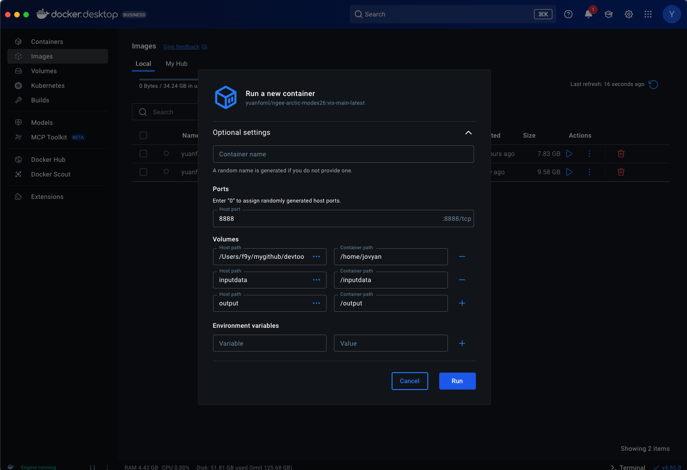

Topography-based subgrid scheme (or Topounits) and methods for
downscaling of atmospheric forcings were introduced in ELM by Tesfa et.
al. 2024 to better resolve terrestrial processes in regions of
heterogeneous terrain.
Tesfa, T. K., Leung, L. R., Thornton, P. E., Brunke, M. A., & Duan, Z. (2024). Impacts of Topography‐Based Subgrid Scheme and Downscaling of Atmospheric Forcing on Modeling Land Surface Processes in the Conterminous US. Journal of Advances in Modeling Earth Systems, 16(8). https://doi.org/10.1029/2023ms004064
Tesfa et. al. 2024 derived topounits from high resolution elevation data (90 m) for the half
degree grids. Topounits‐based surface properties (including PFTs,
soil texture etc.) input parameters were
generated by mapping grid‐level values onto the TGUs of each grid.
The algorithm extracts elevation values based on the boundary of the modeling unit (grid) and discretizes the
modeling unit into 12 initial subgrid units using the 12 percentile elevation values calculated to represent the
elevation values at each consecutive percentile (10th, 20th, 30th, 40th, 50th, 60th, 70th, 80th, 85th, 90th, 95th and
100th). Then, the 12 values of elevation range are determined using the minimum elevation value within each grid
and the corresponding percentile elevation values as class breaks.
Furthermore, the 100‐m elevation threshold value is used to
calculate new values of elevation class break using a recursive
algorithm developed by Tesfa et. al. 2024. The recursive
algorithm merges any elevation class with elevation range less than the
threshold value to its neighboring class recursively until all the classes with elevation range smaller than the threshold value are removed.
This allows the topography‐based subgrid scheme to capture the impacts of topographic heterogeneity while
minimizing computational demand of the model by varying the number of
topounits per grid depending on the topographic heterogeneity within each modeling unit.
Digital Elevation Model (DEM) near Toolik Field Station¶
Topounits (recursive merging) for Toolik Field Station identify 6 topounits¶
Plot below show the 12 percentile based elevation bins and the recursive
merge strategy to create the topounits.
Plot below shows the number of topounits across a 0.5 degree Pan-Arctic
ELM grid.
Elevation Range with Maximum elevation Method (ERMM) devveloped by Tesfa
et. al. 2020 is used to downscale atmospheric forcings from gridcell to
topounits. The ERMM method uses only the topographic characteristics of the grid and the TGUs to disaggregate grid-level precipitation to the TGUs of the grid.
Connections among multiple topounits (labeled a through g) on a single gridcell. Each topounit is connected to at most one other downhill topounit (the next lowest in elevation), while the lowest topounit does not have a downhill connection.¶
Arrangement of topounits, columns, state variables, and water fluxes¶
Summary representation of hillslope hydrology fluxes at the topounit level. The water state variable for one topounit (gray shaded box) receives water from a column on an uphill topounit (column a). The operator symbol represents combined user parameter for the fraction of column-level flux to transport downhill and the scaling factor accounting for potential difference in area between the upstream column and the downstream topounit. Water leaving the topounit water state is moved to columns on the topounit .¶
We will use Council C71 site (at Seward Peninsula of Alaska) for all
simulations in this exercise.
To run ELM in offline mode (without coupling to other E3SM
components), we would need input datafiles as summarized below:
ELM domain file is located within the container volume at:
/mnt/inputdata/E3SM/share/domains/domain.clm/
Files used in this exercise include the identifier ‘C71’ for Council
Mile Marker 71, at Seward Peninsula of AK,
AK in their name:
domain.lnd.r05_RRSwISC6to18E3r5.240328_C71-Grid.nc: This file
provides the computational mesh for ELM, including grid location and its size (vertices, and area).
A number of meteorological datasets are being used by NGEE-Arctic to
provide forcings for the ELM simulations. This exercise will use GSWP3
(v2) data, available at: /mnt/inputdata/E3SM/atm/datm7/gswp3/
Data for Council site are within the subdirectory: cnl/
There are 7 key meterological variables at 3 hourly frequency that
provides meteorological:
FSDS
incoming solar shortwave radiation
FLDS
incoming solar longwave radiation
PRECTmms
precipitation in unit of mm/s
PSRF
air pressure (near-surface)
QBOT
air specific humidity (near-surface, or bottom of atmosphere)
TBOT
air temperature
WIND
wind speed
8.4. Running ELM: Exercises on topographic unit, hereafter, topounit, data and functionality¶
--topounits_atmdownscale, will turn ON the feature to
downscaling air temperature and precipitation from gricells to topounits.
--ad_spinup_yrs=20, --final_spinup_yrs=10, --transient_yrs=10 defines the number of years simulation should be conducted for ad_spinup, final_spinup, and transient steps. These values typically would be higher, but set low for illustration.
Topounits and downscaling features can have significant impact
on hydrological processes, and consequent impacts on biogeochemical
cycle, if multiple topounits are properly created in ELM surface data.
We will look into those effect later in this exercise.
--ad_spinup_yrs=0 will allow workflow to SKIP the step of
biogeochemically accelerated spinup.
--final_spinup_yrs=0 will SKIP stage of normal spinup.
It will create a case for transient simulation. --no_submit will
however tell the workflow not start the simulation, which we will do in
the next step..
The above command will generate 3 directories for the case: CASE = topounit_gswp3_AK-SP-CL71_ICB20TRCNPRDCTCBC
--case_dirs, --case_name: will be set to the CASEROOT, we created in previous steps.
--run_type=branch: This must be used together with
--restart_path, --restart_case, --restart_date
branchRUN_TYPE is one of 3 types supported by the workflow (startup,
restart, and branch). It will find data and rpointer files at
--restart_path, with case_name == --restart_case, and start
a simulation from the date specified by --restart_date.
--continue_run_yrs=10: Would perform a simulation for 10 years. So
if starting from 2005-01-01, it will end on 2014-12-31.
--rest_yrs=11: Tells the model to save restart files every 11 years.
Since the current run only goes for 10 years, it won’t generate any restart files.
.. If intended to, have to set this to not greater than –continue_run_yrs.
--user_namelist="topounit": Enables topounits feature
.. , but no meteorological downscaling or IM2 hillslope hydrology
--merged_ncfile will asks workflow to save merged sub-grid output netCDF files to this file.
Otherwise, default filename would be ELM_output_PFT.nc (overwriting
any existing file with that name).
It can be any name. Here we will use names with some identifiable tags, e.g. E3SM version, not-grid-aggregated, met-ds (NO), IM-2 (NO), topounit (yes), met. type, site-code, ELM compset, period, etc.
Following options are changed compared to previous RUN3: IM1_DS0.
--user_namelist="topounit_atm_downscalng,topounit_IM2" enables
topounits, meteorological downscaling and IM2 hillslope
hydrology.
--merged_ncfile to save the outputs to a new file.
8.5. Analysis and visualization of ELM simulation outputs¶
8.5.1. Start jupyter notebook in the Docker container¶
After starting the Docker Desktop App, click Left panel’s Images, listing the images available.
Click the Triangle run button next to the image ‘yuanfornl/ngee-arctic-modex26:vis-main-latest’ to start
It will pop up a option/setting page, click and pull the drawdown button, and edit as following.

Note: The first row of volume hookup is for connecting Your local cloned repository ‘Field-to-Model’ directory (full path) to docker container’s directory of ‘/home/jovyan’.
Click Run button and it will start Jupyter notebook. Notice the https links in the output and click on them to pop up a browser window.
In the pop-up browser window, it should show the landing page like following.
8.5.2. Visualizing results using jupyter notebook¶
Click the left explorer window, and click-open the folder: /vis_notebooks/hillslope-bgc/
Click open file: plot_ELM_output.ipynb. We will run this script to
open a ELM output file, and investigate a few variables.
8.5.3. Analyzing the impact of topounits and hillslope hydrology on hydrology (soil moisture) and biogeochemistry (GPP)¶
From the left explorer window, click-open file:
topounit_run_analysis.ipynb. We will run this script to open
merged_ncfile we created for 4 simulations in previous runs, and
conduct some analysis.
We’re going to focus on two variables: top-10cm soil moisture and
GPP.